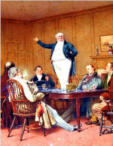
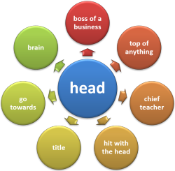
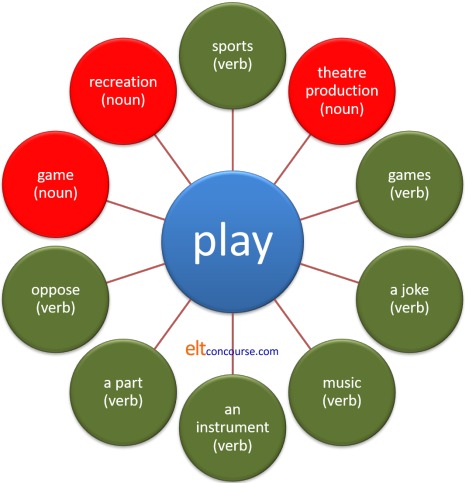
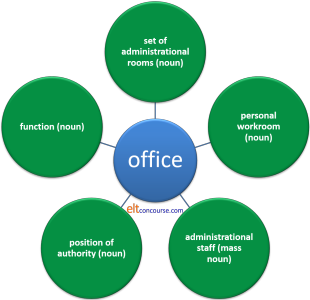
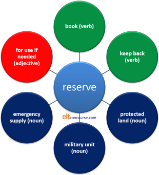

Polysemy and Homonymy
|  |
Mr Stiggins, with several
most indubitable symptoms of having quite as much pine-apple
rum-and-water about him as he could comfortably accommodate,
took his hat, and his leave. Charles Dickens, The Pickwick Papers, Chapter XXVII He carried a strobe light and the responsibility for the lives of his men. Tim O'Brien, The Things They Carried You are free to execute your laws, and your citizens, as you see fit. Star Trek: The Next Generation The farmers in the valley grew potatoes, peanuts, and bored Kevin Flynn Yet time and her aunt moved slowly – and her patience and her ideas were nearly worn out before the tête-à-tête was over. Jane Austen: Pride and Prejudice |
All the citations above are examples of a literary device called zeugma (/ˈzjuːɡ.mə/). Their effect lies in the fact that a single verb or adjective is applied to two objects, one of which is appropriate, the other not.
There are six verbs above which operate like this in these
examples (take, carry, execute, grow, move and
wear out) and they
all exhibit polysemy: they have more than one
meaning in English. If it weren't for polysemy, zeugma
creation would not be possible.
By some estimates, 40% of all words in English are polysemous with
more, sometimes many more, than one meaning.
What is important here, as we shall see, is that the various
meanings of polysemous words are connected in some way (if
obscurely) and in this polysemy differs from homonymy.
Homonymy also refers to words having more than one meaning but in
this case the meanings are wholly unconnected.
Zeugma is sometimes referred to as syllepsis but
on this site the latter term is reserved for concord problems in
which one element can only agree with some of another element in a
sentence as in, for example:
John and Mary will each bring his / her /
their favourite dessert
in which it is unclear which possessive determiner should be applied.
 |
Homonymy, Polysemy, Monosemy and Word family |
- Homonymy
- refers to words which look and sound the same but are
unrelated and have different, unrelated meanings.
They are usually distinguished from homographs (words which look
the same but are differently pronounced, e.g., lead
[the metal] and lead [the verb]) and homophones (words
which look different but are pronounced the same, e.g.,
rights, rites, writes, no, know etc.). Homonyms are
usually derived differently, i.e., they have different
etymologies, but that is not always the case.
Other examples are:
bank (a commercial enterprise concerned with money) and bank (the side of a river)
May (the fifth month of the year) and may (a modal auxiliary verb)
peep (make a bird-like noise) and peep (look cautiously)
air (atmosphere) and air (a tune)
rose (the past form of rise) and rose (a flower)
mean (signify) and mean (unpleasant) and mean (primitive) and mean (average) - Polysemy
- refers to the fact that a word or phrase can have a variety of
related meanings. For example,
He was booked into the hotel
vs.
He was booked by the referee.
Both these meanings of book imply some kind of registration (in a book of some kind) so they are clearly related but have different definitions. A phrase such as on the rocks exhibits the same phenomenon, referring to a drink with ice cubes or to a shipwreck.
Polysemes are often formed by conversion in which the form of a word remains unchanged but its word class alters.
Other examples are:
pen (a writing implement) and pen (the action of writing)
dish (a kind of plate) and dish (a meal)
frame (a surrounding for a picture) and frame (falsely incriminate)
cap (the top of a pen or bottle) and cap (a type of headgear)
drive (control a vehicle) and drive (a short private roadway)
satellite (an orbiting space craft) and satellite (a country or state dependent on a more powerful one)
Polysemy is pronounced /pɒ.ˈlɪ.siː.mɪ/, incidentally, and the adjective is polysemous, pronounced /pɒ.ˈlɪ.siː.məs/. - Monosemy
- refers to a word having only one possible meaning in a language and which cannot lead to ambiguity. For example, the word orrery has no meaning in English other than a clockwork model of the solar system (Riemer, 2010:161).
- Word family
- refers to a single word (or lemma) which takes different
grammatical forms while retaining its core meaning.
Examples are:
nation, nations, national, nationalise etc.
smoke, smoked, smoking, smokes, smoker, smoky etc.
(An alternative definition of word families is one used by teachers of children and refers to words which contain similar constituents so, for example:
nest, best, lest, chest, crest etc.
would qualify as a word family. That is not a useful definition of the term for our purposes.)
Homonymy and polysemy occur in all natural languages. Artificial languages avoid both on the principle that, in an ideal world, any word should have a single unambiguous meaning. You may have noticed that the world is not ideal.
And here's the snag:
the problem of distinguishing between
homonymy and polysemy is, in principle, insoluble.
Lyons, cited in Laufer, in Schmitt and
McCarthy (1997:152)
This is why we are dealing with homonymy and polysemy in the same guide.
Semantic development |
Over time, in all languages, words change their meanings.
Sometimes a word's meaning is extended to other meanings and
sometimes it is altered completely.
In the first case, we arrive at a word which is polysemous: the
primary meaning is retained but other related meanings are grafted
on to the word.
In the second case, we have what is called polysemy splitting in
which the word may retain its primary meaning but a secondary
meaning is now so different that we are justified in calling the
resulting word a homonym, having the same form as another word but a
wholly different meaning.
There are two processes at work:
- Radiation
In this process, a word retains its primary meaning but other meanings are developed from it by analogy or metaphor.
Our example is the word head.
The primary meaning of the word is the uppermost or foremost part of an animal's body and that meaning is retained in the language, of course. However, radiating from the primary meaning are all sorts of other meanings, all of which are related to the primary meaning, like this:

With a little effort, the derived, radiating meanings can be inferred from the primary meaning even when word class changes by conversion from the noun to a verb.
When radiation occurs, the meanings (in the outer circle) derived from the primary one (in the centre) are not related to each other but retain a relationship only to the central word. - Concatenation
In this process, there is a chain of meanings, each related to the one before it but developing until the original meaning and the derived meanings are so different that they qualify as homonyms rather than related meanings of the same word.
Our example is stew.
The oldest meaning referred to a hot room or steam bath, from which the idea of slowly cooking developed and from there, the idea of a meal so cooked of a mix of vegetables and / or meat is a natural step. Metaphorically, the verb can be used to mean leave people without help to face the consequences of their actions, like this:

We cannot infer the meaning of
Don't bother to help. Let him stew.
without making a real leap of imagination and the meaning of
a nice, warming vegetable stew
is not derivable from a hot room without a good deal of inspired guesswork, if it is derivable at all.
The polysemes have split into two or more derivationally related terms which are no longer semantically related so they are homonyms.
The primary meaning of hot room is now lost to Modern English but in some cases of concatenation, may be retained.
A modern example is the word mouse which originally, of course, applied to a small furry rodent but whose meaning has now been extended to refer to the computer peripheral because of a presumed similarity of appearance.
Concatenation often works in two ways:- narrowing: a word may have its meaning narrowed so, for example, the word book originally meant any piece of written material inscribed on any material but the meaning was narrowed to only a certain type of bound paper pages.
- broadening: a word may have its meaning extended so, for example, the word bird was originally used only to apply to young birds but has now been broadened to include all avians.
It is often possible, with a good etymological dictionary, to trace a word's meaning back to its primary source. However, as we explain below, etymology is not a good guide to meaning.
 |
So what's the problem? |
Primarily it is Lyons' problem, cited above, that it is
in
principle impossible to distinguish between homonymy
and polysemy.
A good example is the word horn. The word derives
from Proto-Indo-European and there are cognate words in other
Germanic languages (the word is the same in German, Swedish, Danish,
Norwegian and Old Frisian and almost the same in Modern Frisian,
Dutch and the extinct Gothic).
The musical instrument was originally made from the horns of animals
and the modern meaning is derived from that. Arguably,
therefore, the word meaning the outgrowth on the heads of some
animals and a musical instrument usually made of brass is an example
of monosemy but many would happily suggest that the meanings have
diverged to the extent that they are now homonyms and not even
polysemes. Almost everyone would consider that the uses of the
word to mean telephone or the way vehicles have of warning
others are so far removed from the original meaning as to constitute
separate lexemes. Most dictionaries will see them that way.
Here are some more examples. Would you classify the following examples in black as a word:
- having only one meaning (monosemy)
- having two different but related meanings (polysemy)
- having two completely unrelated meanings (homonymy)
Click here for some notes when you have made your decisions.
- keep
I keep the car in the garage vs. I keep a dog and two cats
There are authorities who would argue strongly that keep is monosemous and that all the senses can be derived from looking at its fundamental meaning. Others would argue that in order to define the word keep in these examples, we need different definitions for each.
In the first, we have a word meaning something like store but in the second, the sense is of look after / have at home.
If you agree with that, for you the word is polysemous because the two senses are distinct but related to each other. - keep
I kept the change vs. I kept him waiting
In these examples, the situation is slightly different because the verb appears alone in the first and in the phrase keep [someone] waiting in the second. Some would argue that the meanings are not related because in the first, the verb means retain and in the second it means something like had in, e.g.:
I had him wait
or oblige as in:
I obliged him to wait
so we have an example of homonymy.
In fact, the verb in English is derived obscurely but may come from Old English cepan [seize or hold and observe]. The supporters of the homonymy position would argue that in the 1000 or so years the word has been around, its meanings have diverged and are now not related. - grandmother
My only grandmother is my father's mother vs. My only grandmother is my mother's mother
Most people would aver that this is an example of monosemy because a single definition (parent's parent [female]) would suffice in both cases. Strictly, this is polysemy because the family relationship is different. In some languages, there are different words for the different types of relationship.
Another example is the word cousin in English which can apply to a male or female relation and to the children of an aunt or an uncle. Some languages have different forms for each kind of relationship and many distinguish between male and female cousins. - take off
The car took off down the street vs. The plane took off on time
This is a similar case to the examples in 2. Some would argue that the terms are the same in both cases, meaning leave quickly from or on a surface and that we can derive the meaning of either from understanding the meaning of the other. Others would argue, probably unsuccessfully, that the terms are homonyms (and not related in meaning). We can argue, probably more successfully, that we have an example of polysemy because the meanings clearly are related but slightly different. - fag
I've smoked too many fags today vs. This work is a real fag
This is a clearer case of homonymy. The words are unrelated. The word means (in BrE slang) a cigarette and is first attested in 1888. The sense of hard and boring work (never plural) comes from BrE public school slang for a younger pupil forced to work for older boys. In AmE, the word has been used since 1922 to mean a homosexual man. That's a third example of homonymy. - quarry
The chalk quarry is now disused vs. They chased their quarry for miles
This is an example of two different words which look and sound the same but have unrelated meanings: they are homonyms. The words derive from different roots: 14th century French and Latin respectively. - get
I got the bus to work vs. I got $10 for the work
The verb get is notoriously polysemous and most dictionaries will list around 30 different meanings (without adding in particles, prepositions or adverbs). It's also a very good example of the blurred lines between the three phenomena. For example, is the word get the same in
I get the idea
I get the money
I get wet
I get letters
etc.? Do we have real homonyms in the case of
It's getting dark
vs.
I'm getting a cold? - grave
His grave is in the churchyard vs. That was a grave mistake
There are many who see a semantic connection between grave meaning serious or important and grave meaning a hole in the ground to receive a corpse. That would make this a case of polysemy. However, the examples are, in fact, arguably homonyms because the derivations are quite different. We have 'arguably' in that sentence because etymology is a poor guide to a word's meaning. Much may change over time.
The adjective grave derives ultimately from the Latin gravis, meaning heavy and that meaning is extended to mean serious in Modern English. Hence. we have a grave expression, a grave problem etc.
The noun grave derives from the Old English græf meaning a ditch and the word has been reduced to the meaning of a hole in the ground to receive a dead body. There is also a verb in Old English, grafen which meant dig and from that the verb also came to mean carve or chisel. In Modern English this only survives in the adjective graven for an image or the verb engrave.
The words look and sound the same but have unconnected meanings and sources. - take
I took a short holiday vs. I took a shower
This is not so clear because the two shades of meaning of take here are so closely related as to mean the same thing. We can substitute have in both cases so we could argue that there is no suggestion of either homonymy or polysemy. Others might disagree. - punch
The fruit punch was delicious vs. The boxer's punch was vicious
Clear homonymy. The first word probably derives from Hindi, the second from Old French. They are wholly unrelated and the similarity is coincidental. People without real-time access to the etymology of the language may, of course, see some kind of connection between the alcohol content of a punch and the effects of a punch in the head. - vital
That's a vital difference vs. He has no vital signs
Most people will classify this as an example of monosemy. In both cases the word refers to life (or its absence) but the first meaning is metaphorically derived from the second and can be understood with little difficulty once one is aware of the meaning of vital as manifesting life and can then extend it to mean essential to life or just plain essential. - why
Why was he tired? vs. Why did he leave?
Most people would consider a simply question word like why can only have one meaning but a moment's thought reveals a problem. The problem lies with another polysemous word: reason. That word can refer to purpose (future) or to cause (past). So we can distinguish:- Why was he tired?
as an enquiry concerning the cause for a condition and means How come?
It can be rephrased as:
What previous action or event caused his tiredness?
This is clearer with an example such as
Why is the girl crying?
which clearly enquires about the cause of an action. - Why did he go to
London?
which concerns the purpose of an action looking forward and means What for?
It cannot be rephrased as
What previous action or event caused him to go to London?
because that implies looking back. It can, however, be rephrased as
What was his future purpose in going to London?
Again, this is made clearer by an example such as
Why is the girl opening the box?
because that is an enquiry concerning the girl's purpose, not the cause of her action.
- Why was he tired?
- how
How did she seem? vs. How did you find out?
The situation is slightly less clear with the word how. It usually refers to manner in some way (so, in that sense is not polysemous) but it evinces four sorts of answers (and that implies four sorts of meaning):- an adjectival modifier such as quite excited, a bit
down, unhappy etc. in answer to, e.g.:
How did she appear? - an adverbial modifier such as hurriedly, with great care, in
a rush etc. in answer to, e.g.:
How did she drive? - a clausal response, such as she heard from Mary, John explained it
etc. in answer to, e.g.:
How did she find out? - an adverbial measure of extent, such as a lot, very, not
much, hours and hours, somewhat etc. in answer to, e.g.:
How unhappy was she?
How long was the journey
- an adjectival modifier such as quite excited, a bit
down, unhappy etc. in answer to, e.g.:
- current
It's a current affairs programme vs. The current runs quickly under the bridge
This example should be compared to the example of grave, above.
The assumption might be that these are homonyms because the two meanings of the adjective and the noun do not seem to be connected. However, this is probably better seen as a case of polysemy.
Both meanings ultimately derive from the Old French corant (Modern French courant) meaning running or flowing. In the second example, then, the meaning of a moving body of water is clear.
In the first example, the derivation is identical but by the middle of the 15th century, the word had acquired its meaning of present, up to date or in progress. So, we get, e.g., the current situation, the current argument etc. It is also, incidentally, the root of the noun currency meaning money used in the country.
The modern meaning with reference to affairs of politics and the state is from the 17th century and arrived at by extension.
The word is polysemous but some might argue that the meanings have diverged sufficiently to treat them as homonyms. - fair
She has fair hair vs. The referee wasn't fair
This example, too, should be compared the last one and to the example of grave.
A modern assumption would be that fair meaning light coloured and fair meaning just or equitable (with its antonym unfair) are clearly so far apart in meaning that the words are homonyms.
Not so, in truth, because the word has only one derivation from the Old English fæger which meant pleasing, beautiful, clear and even morally good.
All the modern meanings of the word in English are extensions of the original meaning:
When it means light coloured and applied to hair or eyes, the meaning reflects 13th century notions of what is beautiful.
When it means according to justice, the word also means pleasing and is of 14th century origin.
When it means reasonable as in, for example, a fair chance, the meaning is an extension of the idea of just or unbiased.
(The word's use to mean a market or celebration day is, however, a real homonym example because that meaning comes from the Latin feriae meaning religious holidays.) - fence
Will he fence in the Olympics next year? vs. I fenced in the garden
In modern English fence (verb: fight with swords) and fence (verb: make a barrier or noun: barrier) may be considered homonyms because the meanings are no longer connected. Both words, however, derive ultimately from the same source (the Latin defensus meaning defend). - while
I read while he watched television vs. While this is interesting, it doesn't help much
In both the examples, the word is a subordinating conjunction but in the first case it is temporal (meaning, roughly, during the time that or when) and in the second it is concessive (meaning although).
The connection can be seen because they both carry the meaning of states or events occurring simultaneously but for teaching purposes, they are better treated as homonyms although they are more like polysemes.
Occasionally, a lexeme will betray whether it is polysemous of
homonymous in its grammar, word class and colligational
characteristics.
For example, in
The tree has blown down
The concept is not yet full blown
He received a nasty blow on the head
are all, on the face of things, varieties of the word blow
but the words merely look similar and it's easy to see that
blow is a verb (and irregular) concerned with moving
air. It is cognate with the German word blähen.
blown is an adjective related to being in full bloom
(as of a flower), The verb bloom from which it
originates is cognate with the German verb blühen.
blow is a noun meaning a strike and may be cognate
with the Middle Dutch blouwen, beat, but its
origin is obscure.
 |
The appeal to etymology and word originsThe etymological fallacy |
In this section we have occasionally and with some reluctance
appealed to words' etymologies to decide if they are examples of
homonymy or polysemy.
This is an area beloved of the language
pedant, almost always the ignorant language pedant, who sees a
word's historical meaning as somehow its 'real' meaning. A
word's real meaning is the way in which it is used now by native
speakers of the language. It may be the case, for example,
that the word toilet, originally spelled toylet, meant when
it was imported from French, a cloth that tailors used to bundle up
other pieces of cloth. It then moved its meaning by the
process of concatenation explained above, to a cloth
spread on a dressing table and over the centuries has shifted its
meaning again to a porcelain bowl with a flush or the room in
which you will find one.
Those who insist that a word's
original meaning is a guide to how it should be used need to tell us
at which point in history we should freeze a word's meaning to stop
the decline of the language (something, incidentally, which is not
happening).
Another good example is the word egregious, an adjective
imported in the 1530s. It comes from a Latin phrase ex
grege which means separated from or rising above the flock and
originally meant distinguished or excellent.
However, by the late 16th century the word came to mean its opposite
in the modern sense of notably bad, even evil.
This was, it has been speculated, because the word was used
ironically so frequently that people came to believe it meant the
opposite of what was intended. It is a neat example of how
language changes over time (and not much time in this case) and of
how etymology is not a good guide to meaning.
The etymology of words is, indeed, an interesting (for some) window
into the past and also tells the serious linguist something about
how language changes under cultural pressures. That a word's
etymology is a guide to its current meaning or how it should be used
is arrant nonsense.
That is the etymological fallacy.
 |
Syntactical homonymy |
There is a full guide on this site to this area, linked below, so
only a few examples of this phenomenon will be given here to get the
flavour.
The expression refers to the fact that many function words can
perform different, but often semantically related, grammatical
functions.
The same considerations concerning whether the use of a function
word in a different word class or with a different meaning is
homonymy or polysemy apply here, too.
Here are some examples:
- since
This troublesome word has a number of related meanings (and some distinctly different ones) so may be used as an example of both polysemy and homonymy but syntactically rather than semantically based.- It functions as a temporal preposition and refers to the
following time span up until another event intervenes or
until the present. For example:
She has worked here since October
They had been in their jobs since the beginning of the year but left in October
They have waited since the first meeting for an answer - The word is also a good example of syntactical homonymy
because it can also function as:
- an adverb
I saw her when she came to visit her mother, but not since
He started on a low salary but has since been promoted and now earns well - a temporal subordinating conjunction:
He had lived there since he came to London but moved when he retired
I have been at university since I was 18 - a causal resultative subordinating conjunction
I had a drink in the bar, since I had an hour to kill before my train
Since it was Sunday, I stayed in bed till noon
- an adverb
- It functions as a temporal preposition and refers to the
following time span up until another event intervenes or
until the present. For example:
- yet
Take these two examples:
He is tired and getting old. Yet he works a six-day week.
I was tired yet happy with my efforts
In the first case, yet is an adverbial acting as a conjunct referring anaphorically to the first sentence. It could be replaced with a more familiar conjunct performing the same function, such as however.
In the second case, it is a conjunction meaning something like but.
Whether you consider that the two meanings are close enough to be an example of polysemy is moot but, because the word occupies two separate word classes, this is better described as an example of syntactical homonymy. - for
Is a good example of syntactical homonymy but also of plain polysemy.- In the first case, we can see that it can be both a
preposition and a conjunction. As a preposition
in, e.g.:
I did the work for the money
and as a coordinating conjunction (albeit slightly old-fashioned and formal) in, e.g.:
I said nothing for I knew they wouldn't listen to me - In terms of polysemy, the preposition for has at least
14 different but variously related meanings. The full
list of 14 is available
here
(new tab).
Again, how closely you feel the meanings are related will determine whether you teach the area as an example of polysemy or separate the meanings and teach it as homonymy. The meanings include these five :- Intended to be given:
There's a letter for you - Having the purpose:
The house is not for sale - Amount of time or distance:
He spoke for hours
We drove for miles - On the occasion of:
I bought it him for his birthday - In support of:
I won't vote for the President again
- Intended to be given:
- In the first case, we can see that it can be both a
preposition and a conjunction. As a preposition
in, e.g.:
For more, as well as a consideration of gradience, a related concept, see the guide.
 |
Metaphor: obscure and transparent meaning |
Obscure and transparent meanings are relative terms not absolute categories. For example:
- To derive the meaning of coin a new word from the central meaning of coin [metal currency] is quite difficult but the relationship exists, albeit obscurely. The two meanings of coin are actually an example of polysemy but, for teaching purposes, probably best considered and taught as homonyms of coin.
- On the other hand, to derive the meaning of I banked the
money from knowledge of the noun bank (the
business) is a
relatively easy thing to do because the relationship is much
more transparent.
Providing one is given a bit of pictorial help, it is not too hard to figure out the alternative meaning of carrot as allurement.
There is an argument that alternative meanings of a word which
are easily and obviously just a metaphorical extension of the base
meaning do not constitute examples of polysemy.
Prepositions
are good examples of simple metaphorical extensions of meaning which
are not too difficult to work out providing one knows the usual,
locative meaning of the preposition. Examples are:
to
agree among ourselves
to have people working under you
to meet at six
to be in
danger
to be beyond help
and so on. All these
prepositional uses are metaphorical extensions of the locative
(place) meaning of the
preposition, and therefore examples of polysemy, but the meaning is
usually transparent.
It is often observed that prepositions of time closely parallel
prepositions of place so, for example:
We met in the summer
and
We met in the theatre
both refer to longer times and larger places than:
We met at six o'clock
and
We met at the ticket office
(However, the system is by no means consistent because words such
as:
since, during, till
are only used (as prepositions) for time, and
beneath, behind, out of
are reserved (as prepositions) for spatial relations.)
Compositionality |
|
| let the cat out of the bag |
The term compositionality is usually attributed to Gottlieb Frege
who asserted that the meaning of a phrase or clause may be inferred
from its constituents so, for example, we can disambiguate the
homonym word bear in these phrases:
the fat bear
bear a hand
by looking for the connections between phrase, word class and word meaning.
It is, however, not always so easy when fixed phrases are concerned and it is clear that the expression let the cat out of the bag cannot be unpacked by knowing the meaning of all the words which make up the idiom.
Polysemous words in compounds present some difficulties.
For example, in:
doorman
the use of door is not to mean an object but an entrance to
something (and may not be a door at all).
In:
hot potato
we may not be referring to a potato at all but to a situation which
needs careful handling.
Affixes may also be polysemous so, for example, in:
The situation is hopeless
the suffix, -less, clearly means without but in:
She's a hopeless golfer
the suffix does not carry the meaning of without and the
word means something like very poor.
In:
unfortunate
the prefix, un-, means not but in:
untie
the prefix implies reversing an action.
In:
hopeful
the suffix means showing the characteristics of the stem
noun, hope, but in
spoonful
it means the amount contained by the stem noun.
 |
Teaching in this area |
 |
Learner difficulties |
- Homonymy is common to all languages but, of course, is also
different in all languages. For example, in English, the
word bank may refer to a place to keep money or the
side of a river or take the meaning of the verb rely.
Similarly, in German, arm may mean poor or
an upper limb, in French, pic may mean peak
or woodpecker and louer means both hire
and praise although the words are unrelated,
having different origins (Riemer, 2010:162).
There are no predictable cross-language patterns so we have to be alert to the fact that, e.g., since will only be recognised as a time preposition (since last weekend) and not as a subordinating conjunction (He paid since he had the money). - Polysemy is likewise not a predictable pattern. The word head in English may mean boss, lead, foam on beer, tip, top etc. but each of these meanings (all of which are related and so polysemous) would require a different word altogether in most languages. In German, the word Leiter is polysemous and has the meaning of leader but also, by metaphorical extension, ladder. Translation is perilous.
- Verbs present particular difficulties:
- Those sometimes
described as delexicalised, such as make, do, pay, get
etc., are unpredictable because patterns of meaning and
their concepts will not translate, with the meaning often reliant
on the noun with which they collocate. Most such verbs are
polysemous insofar as they take their meaning from the noun with
which they appear.
They made friends
and
They made the beds
are clearly different but related meanings of the verb make and, for teaching purposes, it is often wise to treat them as homonyms rather than polysemes.
A wiser approach is not to treat them separately at all but to teach the lexical chunk in which they appear. - A verb like paint, in the sense of apply liquid
colour to a surface, is, on the face of it, uncomplicated and
monosemous. However, there is clearly a cline from the
uncomplicated sense to the polysemous uses in the
distinction between
paint the house
paint a picture of the house
and the metaphorical extension of, e.g.:
he painted a depressing picture of the future of the country.
Armed only with the base meaning, a learner may be excused for being confused by the existence of the polysemes. - Transitivity also presents difficulties and verbs may
alter in meaning depending on whether they are used with or
without an object.
For example:
She left at 6
She left him her house
They managed without much money
They managed the company
In addition, when used transitively or intransitively, the nature of the subject will often alter, for example:
I broke the glass
The glass broke
She ended the activity
The activity ended
and so on. - Even verbs which are used transitively may alter meaning
in quite subtle ways. For example:
The police dusted the window for fingerprints
i.e., added dust
He dusted the room
i.e., removed dust
Additionally,
She smoked a cigarette
and
She smoked the cheese
are clearly different but related meanings of the verb smoke.
And
He ate dinner
The acid ate the metal
are different but connected meanings of the verb eat. - The verb mean itself is notorious in this
respect. Jackendoff (2012:33 et seq.)
identifies that the verb is used at least seven different
ways:
- can be translated as:
Fisch in German means fish in English - is defined as:
Smog means fog and smoke combined - is explained as:
The flashing light means the hard drive is working - is causally linked to:
Catching that train means getting up very early - intend:
I mean to finish this today - impact:
The fall in the value of the pound means that imports will be more expensive - emotional impact:
Your help meant a great deal to us
- can be translated as:
- Those sometimes
described as delexicalised, such as make, do, pay, get
etc., are unpredictable because patterns of meaning and
their concepts will not translate, with the meaning often reliant
on the noun with which they collocate. Most such verbs are
polysemous insofar as they take their meaning from the noun with
which they appear.
- Connotation (i.e., the emotional meaning we attach to words) is also unpredictable. For example, pig may have an alternative meaning in English of glutton but that is more to do with cultural and historical issues than with the polysemous nature of the word.
 |
Presenting the data to our learners |
Whether we consider that words have a single meaning, two (or
more) related meanings or two (or more) wholly unrelated meanings
matters. Many very common words in English are polysemous and
to deny our learners the data they need to be able to deploy the
words accurately would seem perverse.
Consider the word
play as an example in these sentences:
- Arsenal are playing tonight.
- I'm playing football tomorrow.
- I'm playing John in the final.
- Who plays the hero?
- She plays the piano beautifully.
- Which orchestra is playing?
- He's playing you for a fool.
- Which play are you going to see?
If you have doubts about the polysemous nature of the word, try
the so-called 'and / and-so' test, constructing sentences such as
I am playing darts and John
Moscow Dynamo are playing tonight
and so is the Royal Philharmonic
He played chess and the violin
He
played a trick on me and a waiter on stage
If you create a zeugma,
that's evidence of polysemy.
How would you present this data to learners? Think for a
moment and then click here
 to reveal an idea.
to reveal an idea.

Learners, given the example sentences (i.e., the data) can be
encouraged to work out the polysemes for themselves and produce a
chart like this if they find it helpful. This is a
fairly simple example but you can do this at many levels with many
lexemes. Try it with, e.g., office
or reserve
etc. to see what's meant.
You may end up with diagrams such as:
|  |  |
If you are feeling strong, you can try this with extremely polysemous words in English such as get, set, make, do, but you would be well advised to break the area down into sense units.
 |
Context and co-text |
The fact that polysemy is so common, underlines the need to make
sure our learners have the data they need to understand lexis.
For example, one could present the meaning of wake up as:
 |
= to stop sleeping: she woke up at 8 o'clock feeling good |
That would effectively provide your learners with the base meaning but provide none of the sense of any polysemes. Alternatively, you could use the idea above but extend it with:
 |
= to become more active: their first goal made us wake up and play better |
 |
= become aware of problems: The President told the people it was time to wake up to the danger |
This doesn't have to be done graphically, of course. It is
often just as effective to present alternative meanings (dealing
with homonymy or polysemy) in words.
For example:
Task: Match the meaning of set to the example by drawing a line to connect them.
| to fix at a place or time (transitive verb) | Are we all set? Can we go now? | |
| to go down (intransitive verb) | he has a full set of Dickens' novels | |
| to put (transitive verb) | set the clock for 6: we have to leave early | |
| to become solid (intransitive verb) | there's only a set number of hours we can work without a break | |
| a collection (count noun) | set it on the table by the door | |
| ready (as an ungradable adjective) | the sun set slowly into the sea | |
| fixed (as an ungradable adjective) | the glue has set now so it's safe to move it |
Focusing learners on word class is helpful.
Arguably, by the way, only the notion of set as a
collection and set meaning go down are
true homonyms of set.
The others are polysemes. Some would even see the sense of a
collection as derivable from the idea of a fixed number (so
polysemy) but it is unlikely that most learners would draw that out
for themselves. Whether most learners would make the
connection between:
a set number
the glue has set
and
set an alarm clock
which are all linked to a meaning of fix,
without help is also open to question but they can be led there.
Noticing metaphorical extensions of meaning or similarities of
meaning is an important skill to foster.
Unless we understand the nature of homonymy and polysemy, of course,
we can't do that.
| Related guides | |
| semantics | for more on the meaning of meaning |
| syntactical homonymy and gradience | for the guide to how function words may slip between word classes and also represent different communicative functions within word classes |
| synonymy | for a guide to synonymy and five other related ideas: metonymy, synecdoche, simile, metaphor, hyponymy |
| idiomaticity | for more on (non-)compositionality and transparency |
| ambiguity | for a guide which considers polysemy as a source of ambiguity (and quite a lot more) |
| context | for more on what it affects and sources of context for teaching |
References:
Jackendoff, R, 2012, A User's Guide to Thought and Meaning,
Oxford: Oxford University Press
Riemer, N, 2010, Introducing Semantics, New York:
Cambridge University Press
Schmitt, N and McCarthy, M, 1997,
Vocabulary - Description, Acquisition and Pedagogy, Cambridge:
Cambridge University Press